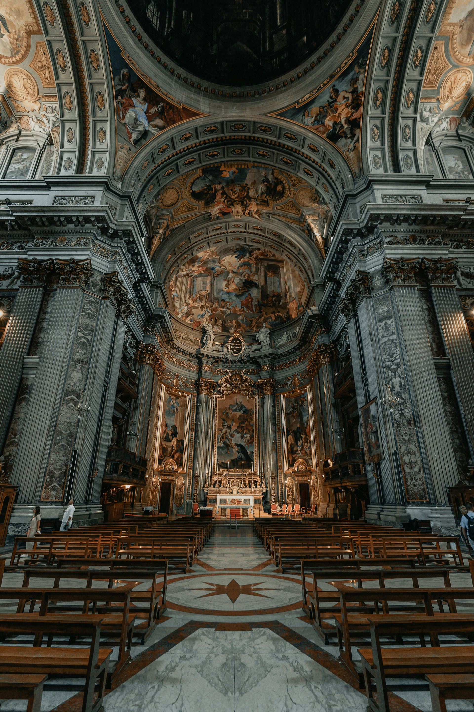
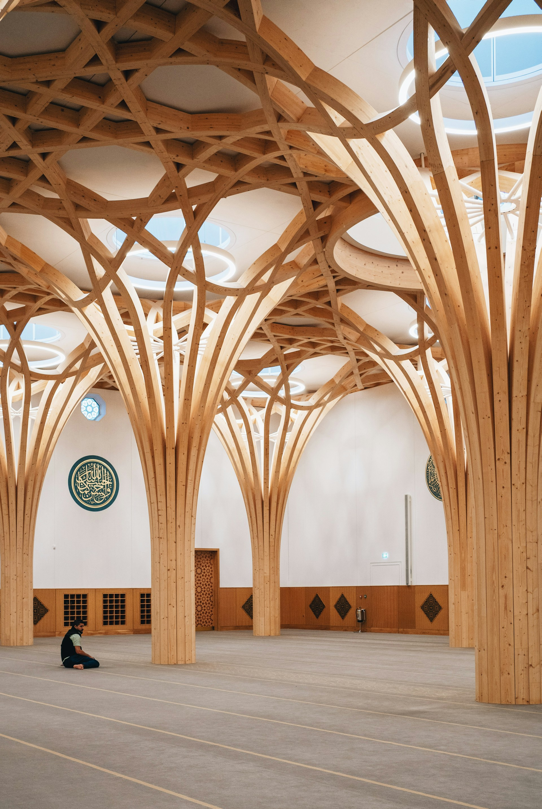
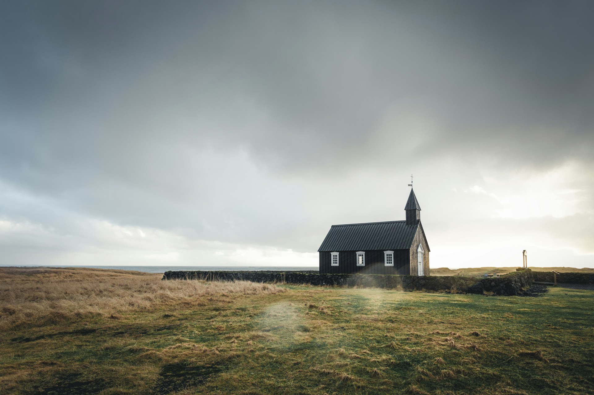
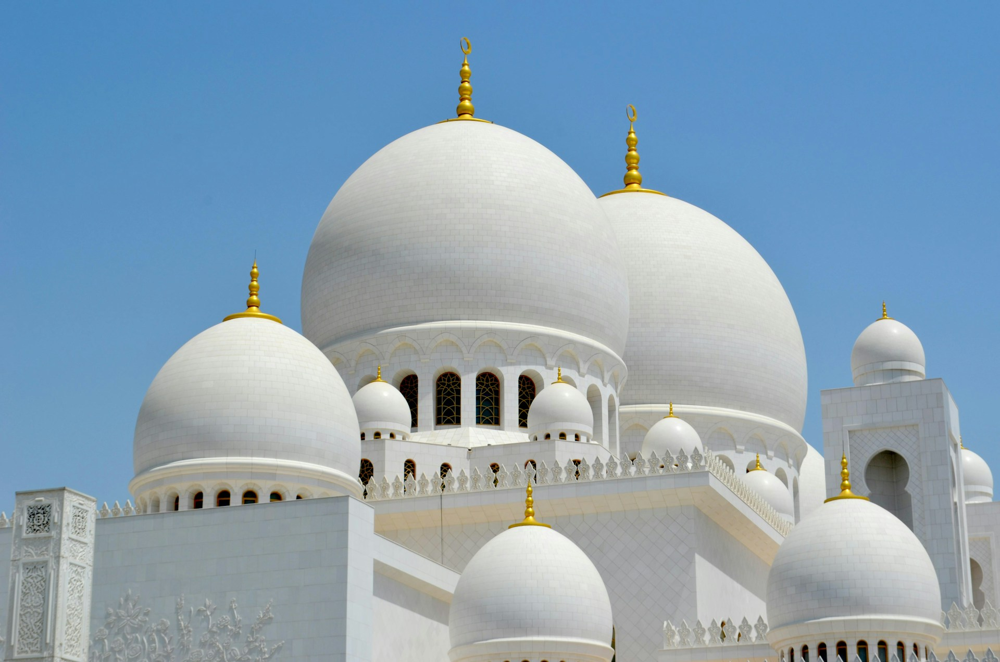
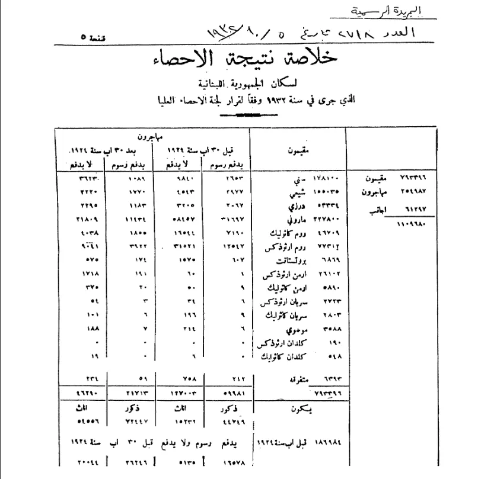

A Land of Faith and Diversity
Religion in Lebanon is characterized by a diversity of religious beliefs and practices. The main religious groups in the country are Shia Muslims, Sunni Muslims, Maronite Christians, and Greek Orthodox Christians.
Statistics quoted in 2023 indicate that 32.2% are Shia, 31.2% are Sunni, 16.0% are Maronite, 7.6% are Greek Orthodox, 5.5% are Druze. The rest belong to other smaller Muslim and Christian denominations. Besides Lebanese citizens in Lebanon, a large proportion of the country's population are displaced refugees, accounting for 2 million out of 6 million in 2024. The refugees, who are mostly of Syrian or Palestinian origin, are predominantly Sunni Muslims, but include Christians and Shia Muslims. Lebanon differs from other Middle East countries in that Muslims have become the majority more recently, after the Lebanese Civil War. Christians were once a majority inside Lebanon and are still an overwhelming majority in the Lebanese diaspora, which consists of nearly 14 million people.
- Shiite (32.2%)
- Sunnism (31.2%)
- Alawism and Ismailism (0.60%)
- Maronite (16.0%)
- Greek Orthodox(7.62%)
- Other Christians (6.86%)
- Druze (5.50%)




No official census has been taken since 1932, reflecting the political sensitivity in Lebanon over confessional (i.e., religious) balance. As a result, the religious affiliation of the Lebanese population is very difficult to establish with certainty and various sources are used to get the possible estimate of the population by religious affiliation.
| Christians | ||
|---|---|---|
| Sect | Population | Percentage |
| Maronite Catholic | 226,378 | 28.8% |
| Greek Orthodox | 76,522 | 9.7% |
| Melkite Catholic | 46,000 | 5.9% |
| Other Christians | 53,463 | 6.8% |
| Total | 402,363 | 51.2% |
| Muslims | ||
| Sect | Population | Percentage |
| Sunni | 175,925 | 22.4% |
| Shiite | 154,208 | 19.6% |
| Total | 330,133 | 42.0% |
| Druze | ||
| Druze | 53,047 | 6.8% |
| Total | 53,047 | 6.8% |
